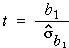
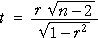

Strength of a relationship
The strength of the relationship between two variables, X and Y, is usually summarised by their correlation coefficient, r.
When the data are sampled from some population, there is a corresponding underlying population correlation coefficient, ρ, that r approximates. (ρ is the Greek letter r, pronounced 'rho'.) The sample correlation coefficient r is an estimate of the unknown population parameter, ρ.
| As the sample size increases, r becomes a more accurate estimate of ρ, but its distribution is always centred near ρ. |
The size of the correlation coefficient is therefore not dependent on the sample size.
Strength of evidence for a relationship
It is important to distinguish between the correlation coefficient, r, and the p-value for testing whether there is a relationship between X and Y.
It is important not to confuse these two values when interpreting the p-value for a test.
The interpretation of the p-value is helped by giving an alternative formula for the test statistic,

This can be rewritten in terms of the correlation coefficient, r, and the sample size as...

Since the p-value describes how far t is from zero,
| The p-value depends on both r and the sample size, n. |
If r stays the same, the test statistic becomes further from zero (and the p-value for the test therefore becomes smaller) as the sample size increases.
The following examples illustrate how both the sample size and the correlation coefficient affect the p-value.
In the data set at the top left, there is no evidence of a relationship between the variables — a correlation coefficient of 0.24 could easily have arisen by chance even if the variables were not related at all.
The data set on the top right has the same correlation coefficient, 0.24. However its sample size is much higher and a correlation coefficient this far from zero is now very unlikely, so the p-value is small. There is almost certainly a relationship between X and Y, even though the relationship is weak.
With a sample size of 30, the relationship would need to be stronger for us to detect it. The data set on the bottom left shows that r = 0.63 gives strong evidence of a relationship with a data set of this size.